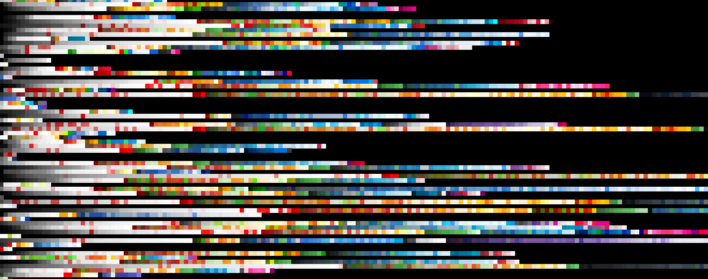

Scraping Color Schemes - Fall 2016

To practice ML, I'm scraping hex colors from websites to make a large dataset of color schemes. Currently, I have around 10,000, and will shoot for around 20,000.
The visualization above is part of my dataset. Each row is the colorscheme from one site, sorted.
Fractals - Fall 2016
Fractal displays like the mandelbrot set are a visualization of complex numbers that converge to a finite number. The x-axis represents real numbers and y-axis represents imaginary numbers, and each point is put into a recursive function. If it goes to infinity, it is not in the set. The light colors are the ones that are (probably) in the set, but since we can't tell exactly, how dark the color is represents how quickly the function grows.
I specified the coefficients to the fourth degree for the complex polynomial that generated the picture above. Later I might make a way to zoom in on parts of the fractal, and then rerender that at a higher resolution.
Voronoi Polygons - Summer 2016

Voronoi cells are neat: given a series of points, you can divide the space into cells around each point where everything in that cell is closest to that point and no other.
Given a picture, I generate centroid points either in a uniform distribution or a fat-tailed gaussian distribution (centered around a focal point that I specify), find which cell each pixel belongs to (an O(num pixels) operation) and color them according to the average color of pixels in that cell.
Finding faster algorithms was challenging. I couldn't figure out why k-d trees were so much slower than simple 1d binary search, for one. In the end the algorithm was expanding a circle around each centroid, and marking the pixels if they haven't been marked before.
Trolley Problem in VR - Spring 2015
You don the headset, and walk across the station. Something is wrong, and people are tied to the tracks: five on the main track and one on the other. There's a lever in the center. You hear a train. Do you pull the lever? When the train arrives, you're not done. The game starts again, but you're in the body of one of the people tied to the tracks. Most likely, you are one of the five.
I implemented this using Unreal Engine 4 for Occulus Rift.
Recursive stick art - Fall 2014

These were created through a recursive algorithm, but intuitively. Imagine a chain of popsicle sticks, each attached to the next by a shaft with a rotor and pen attached. We get the rotation speed using an equation f(n) where n is the rotor in question.
Given an equation, you can watch the sticks carve out patterns.